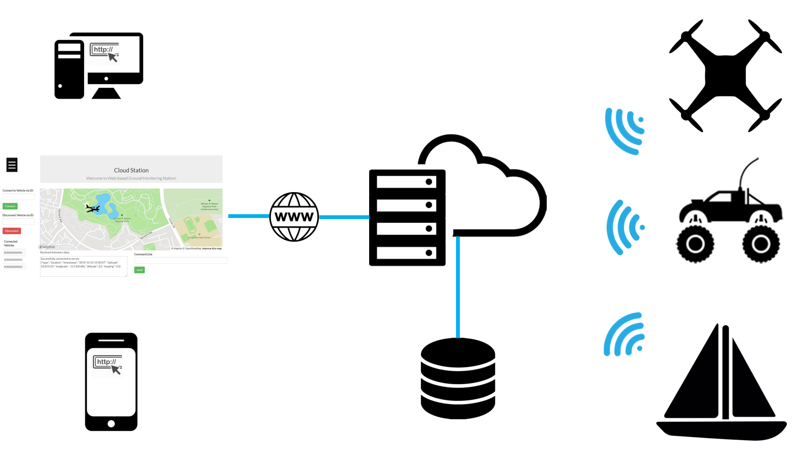
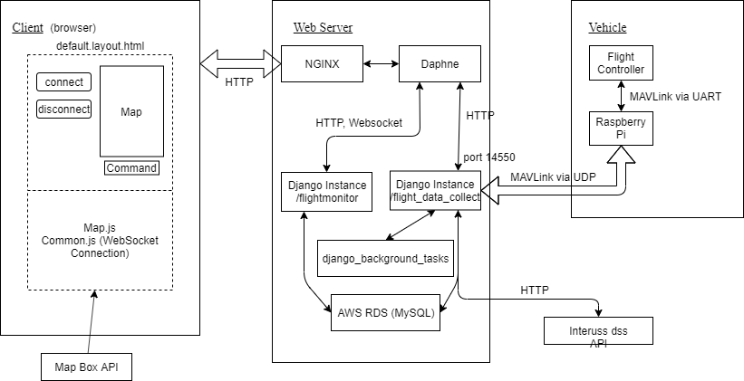

Web app¶
System architecture¶


Prerequisite¶
Python 3.6+
Django
Django Channels
Django Background Tasks
Redis
pyMavlink
pyserial
Docker
Tutorial to setup Python Django development environment: https://developer.mozilla.org/en-US/docs/Learn/Server-side/Django/development_environment
Getting started¶
These steps can be used to set up a local development environment for this web app. Please follow deployment instructions instead if you want to deploy it on a web server.
Install libraries
pip3 install -r requirements.txt
Install and run docker: https://www.docker.com/get-started
docker run -p 6379:6379 -d redis:2.8
Register for MapBox and generate a public access token https://account.mapbox.com/
Add mapbox public access token (public key) to .env of your environment
Note: Please do not push your pk to GitHub. In production env, this key should ideally be temporary and change from session to session.- ubuntu
export MAPBOX_PUBLIC_KEY=pk.xxxxxxxxxxxxxxxxxxxxxxxxxx - windows
setx MAPBOX_PUBLIC_KEY "pk.xxxxxxxxxxxxxxxxxxxxxxxxxxxxx"or add an entry in system variables
- ubuntu
Run server¶
python3 manage.py makemigrations
python3 manage.py migrate
python3 manage.py runserver
python3 manage.py process_tasks
Milestones & Backlogs¶
[x] System architecture and prototype (8/31/19)
[x] Rewrite mavlink streaming code (9/5/19)
[x] Add map to html (10/15/19)
[x] Deploy on AWS (10/15/19) We are online!!!
[x] Build hardware stack with Omnibus F4 and Raspberry Pi (10/30/19)
[x] Two way communication between vehicle and the server (11/5/19)
[x] User authentication (11/16/19)
[x] Mark drone location on map (11/24)
[ ] Migrate to AWS RDS
[ ] Communicate with multiple drones at the same time
[ ] Distinguish different users. Only send vehicle updates to authorized users
[ ] Develop an improved UI for telemetry data
[ ] Use a more robust background tasks solution